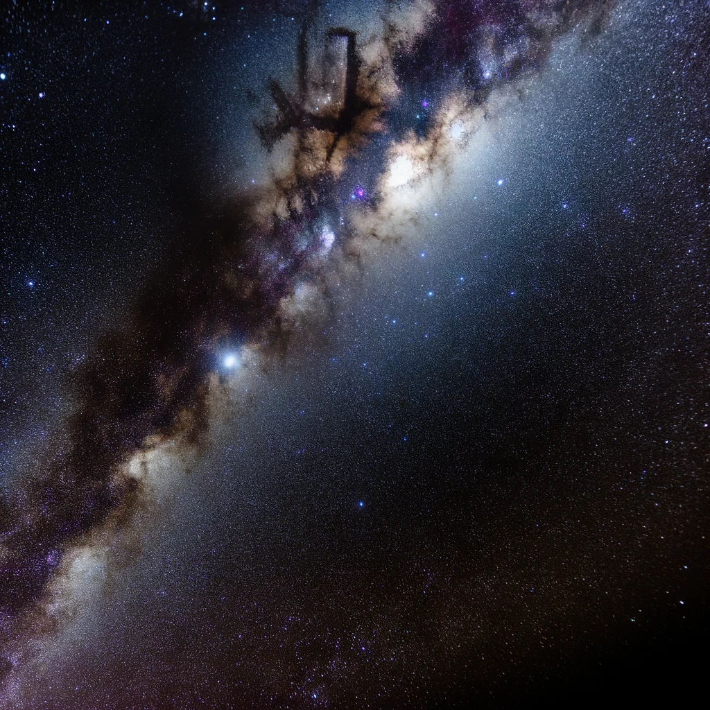

Les Merveilles de la Voie Lactée
La Voie Lactée, notre galaxie natale, est un vaste réseau de plus de 100 milliards d'étoiles, de poussières et de gaz interstellaires, s'étendant sur environ 100 000 années-lumière. Dans ce vaste cosmos, notre système solaire ne représente qu'un petit point parmi des milliards d'autres, chacun avec ses propres mystères à découvrir.
Observer la Voie Lactée est une expérience à couper le souffle qui est accessible à tous ceux qui s'éloignent suffisamment de la pollution lumineuse des villes. Les nuits claires et sombres offrent une vue spectaculaire sur ce ruban d'étoiles, permettant même à l'œil nu de percevoir sa structure complexe.
La Voie Lactée n'est pas seulement notre domicile cosmique, mais elle représente également un champ de recherche vital pour comprendre la formation et l'évolution des galaxies, ainsi que les processus fondamentaux qui régissent l'univers.